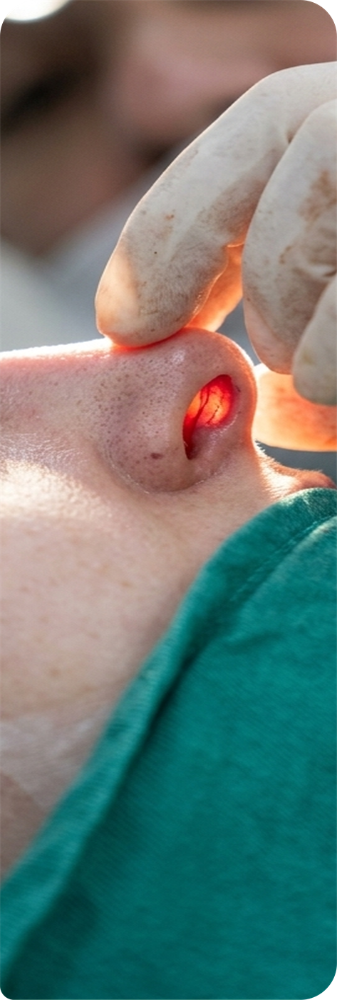
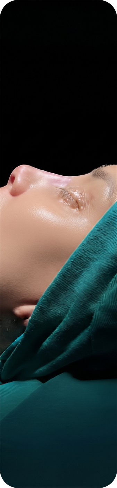

Formação
Reconhecida
Técnicas cirúrgicas respaldadas por instituições de peso como Santa Casa e Harvard, garantindo resultados seguros.
CRM-SC 9359 • RQE 4759
Estética e função avaliadas juntas. Segurança e precisão para resultados naturais.



Combinamos 29 anos de experiência e a precisão técnica de instituições como Santa Casa e Harvard com um olhar clínico e humano.
Nosso foco não é mudar quem você é, mas realçar o que você tem de melhor com toda segurança e naturalidade.
Conhecer trajetória completaUma infraestrutura completa planejada para atender você com segurança e exclusividade.
Técnicas cirúrgicas respaldadas por instituições de peso como Santa Casa e Harvard, garantindo resultados seguros.
Comunicação direta e acompanhamento próximo em todas as etapas, do pré ao pós-operatório.
Equipamentos de última geração e ambientes projetados para acolher você com total privacidade e conforto.
Do planejamento ao resultado final, cada detalhe é conduzido com rigor técnico e dedicação.
Não trabalhamos com padrões prontos. Analisamos suas queixas estéticas e funcionais em conjunto para desenhar um plano cirúrgico que respeite a harmonia do seu rosto.
Utilizamos protocolos modernos que priorizam a preservação das estruturas e oferecem suporte contínuo para uma recuperação tranquila e segura.


Tudo o que você precisa saber antes de dar o primeiro passo rumo à sua transformação.
Na primeira consulta, o Dr. Márcio realiza uma escuta detalhada dos seus objetivos estéticos e queixas respiratórias, seguida de exame físico e endoscópico da face e nariz para elaborar um plano cirúrgico individualizado.
Sim! Por ter dupla especialização em Otorrinolaringologia e Cirurgia Plástica da Face, o Dr. Márcio avalia e corrige questões funcionais (como desvio de septo) e estéticas em um único procedimento cirúrgico.
Todas as cirurgias são realizadas em ambiente hospitalar completo em Jaraguá do Sul, contando com equipe de anestesiologia e estrutura de segurança certificada. Procedimentos injetáveis são realizados na clínica.
O retorno às atividades sociais leves costuma ocorrer entre 7 e 14 dias, dependendo do procedimento realizado, sempre com acompanhamento próximo do Dr. Márcio e protocolos de recuperação assistida.

Nossa equipe está pronta para acolher você com atenção e agendar seu horário.
O nosso maior compromisso é com a sua segurança e satisfação. Veja o que dizem os pacientes que já passaram pela nossa clínica.
4.9Fiz rinosseptoplastia e foi tudo perfeito! Do início ao fim, 100% de atenção. Trabalho bem executado e hoje minha autoestima está recuperada graças ao Dr Marcio 🙌🏼 Preço justo.
Excelência no atendimento, profissionalismo e comprometimento com o processo. E resultados além dos esperados. Tanto funcional quanto estético na rinoplastia quanto da sinusectomia.
Desde a recepção sempre fui muito bem atendida!! A gentileza, cuidados, atendimento, atenção, tudo perfeito! Dr. Márcio, profissional super competente e muito paciente em explicar os detalhes!